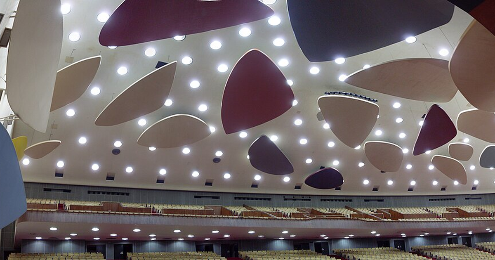

stateDiagram-v2
[*] --> lobby
lobby --> question: next
question --> locked: lock, or the server's clock runs out
locked --> reveal: reveal
reveal --> leaderboard: leaderboard
leaderboard --> question: next
leaderboard --> final: finish
final --> [*]

A live classroom quiz has to keep a projector and dozens of phones in agreement about one fast-changing thing, the game. The simplest agreement that survives a lecture hall is to let one server own the clock, the phase, the answer key and the scores, and to have every screen draw whatever the server last said.
Watch any Kahoot-style game in a large class and count what has to line up. The question on the projector, the four buttons on sixty phones, the countdown, the moment answers stop counting, the reveal, the leaderboard. Now add what a lecture hall does to phones: the Wi-Fi drops for a few seconds, a screen locks, someone reloads the page, someone arrives late. If each phone ran its own copy of the game, those copies would drift apart and nobody could say which one was right.
The fix is to have only one copy. Part 1 produced questions that carry their source quote and review record. This part turns them into a game, and Part 3 turns the game’s answers into diagnostics, which is why some of the choices here, such as how late answers are labelled, only pay off there.
Nothing reaches a phone until the professor approves it
The game starts before class, on the professor’s triage screen. GET /triage/{course_id} lists every verified question with what a person needs to judge it quickly: the stem and options, the evidence quote, its source (stats-notes.pdf, p. 4), and how many attempts the pipeline needed. The professor does one of three things with each question:
- Approve it, which is the only way a question becomes playable.
- Edit it. An edit voids the old verification, so the question goes back to
draftand can’t be approved until it passes Part 1’s checks again. Part 1’sreview_draftruns the substring check and both reviewers on edited text; the job that calls it on each edited question isn’t part of the companion code. - Leave it. Unapproved questions never enter a room.
The rule lives in the database update itself, so a stale dashboard or a double click can’t approve a question that isn’t verified:
def approve(self, question_id):
"""Approve a verified question. Anything else is left alone."""
row = self.conn.execute(
"update questions set status = 'approved'"
" where id = %s and status = 'verified' returning id",
[question_id],
).fetchone()
return row is not NoneLaunching a room checks again. load_questions raises NotApproved if any question offered to a room has any other status, and POST /rooms turns that into a 409. Two checks for one rule is deliberate: the triage screen is where the professor decides, and the room is where a mistake would reach students.
Authentication is out of scope for the companion code. The triage endpoints trust whoever calls them, so a real deployment puts them behind the university’s login.
The server owns the game; the screens only draw it
A game is a short sequence of phases, and the host moves it forward with five commands:
game.py holds that state machine as plain Python with no network code, which is what makes it testable with a fake clock. The transition table is the rulebook, and a command from the wrong phase is rejected:
TRANSITIONS: dict[str, tuple[tuple[Phase, ...], Phase]] = {
"next": (("lobby", "leaderboard"), "question"),
"lock": (("question",), "locked"),
"reveal": (("locked",), "reveal"),
"leaderboard": (("reveal",), "leaderboard"),
"finish": (("leaderboard",), "final"),
}Every change bumps a sequence number, seq, and the server sends every connected screen a fresh snapshot. A screen keeps a snapshot only if it is newer than the one it has. The snapshot also carries an epoch, a random tag chosen when the room is created, so a restarted server, whose seq starts over from zero, can’t be mistaken for old news.
What a snapshot leaves out matters as much as what it holds. Before the reveal, it has no answer key, because anything sent to a phone can be read in the browser’s developer tools:
def snapshot(self) -> dict:
"""The public state every screen receives. No key before the reveal."""
view: dict = {
"room": self.code,
"epoch": self.epoch,
"seq": self.seq,
"phase": self.phase,
"players": len(self.names),
}
if self.phase in ("question", "locked"):
q = self.current
view["question"] = {
"id": q.id,
"number": self.index + 1,
"of": len(self.questions),
"stem": q.stem,
"options": list(q.options),
"remaining_ms": round(self.remaining() * 1000),
}At the reveal, the snapshot adds the key, the count of answers per option, the explanation, and the evidence quote with its page. Seeing the source on the projector is where Part 1’s work shows up in the room. Each phone also gets a small private view alongside the public one: its own score, whether it answered, and, only after the reveal, whether it was right.
The countdown works the same way. The snapshot sends remaining_ms and the phone counts down locally, so the server doesn’t have to broadcast every second. The phone’s countdown is decoration. When time is up, the server locks the question on its own clock:
async def lock_when_due(room: Room) -> None:
"""The server, not any phone, decides when time is up."""
question = room.current.id
# asyncio can wake a timer a hair early, so keep going until the lock
# happens, or the host has already moved on from this question.
while room.phase == "question" and room.current.id == question:
await asyncio.sleep(max(room.remaining(), 0.01))
if room.tick():
await broadcast(room)The transport is FastAPI WebSockets. Supabase Realtime’s broadcast channels would also carry the messages, but they relay between clients. Scoring and the clock still need one authority, so a server like this one would sit behind them anyway.
Rooms live in the server process’s memory. That keeps the design small and puts one hard limit on it: run one worker, or route every connection for a room to the same worker. The measured cost per message is small. A question snapshot plus a phone’s private view for the sample question from Part 1 serialises to 579 bytes, and the reveal to 786.
Answers are events the server counts exactly once
A phone on a weak connection doesn’t know whether its answer arrived. The ack might have been lost, or the answer might not have been sent at all. The safe thing for the phone is to send again, and for that to be safe, the server has to recognise a repeat.
The phone makes an answer_id (a random UUID) when the student taps, keeps the answer in localStorage until the server acknowledges it, and re-sends every unacknowledged answer whenever it reconnects:
function answer(question_id: number, choice: number) {
const a = { answer_id: crypto.randomUUID(), question_id, choice };
pending.current.push(a);
savePending(); // survives a reload or a dead battery mid-question
send(a);
}The server records the first arrival and answers every repeat with the same acknowledgement, never scoring it twice. It writes the answer to Postgres before acknowledging it, and it does so for repeats too: the insert ignores an answer_id it already has, so a write that failed the first time is retried by the phone’s replay, and no acknowledged answer can go missing from the diagnostics. The same answer_id carrying a different choice is rejected, and so is a second answer from the same student to the same question. Points come from the server’s clock, half for being right and half for being quick:
def submit(self, player: str, answer_id: str, question_id: int, choice: int):
"""Record an answer exactly once. Returns (answer, is_new)."""
if not isinstance(question_id, int) or not isinstance(choice, int):
raise Rejected("question_id and choice must be integers")
claim = (player, question_id, choice)
if answer_id in self.answers:
prior = self.answers[answer_id]
if (prior.player, prior.question_id, prior.choice) != claim:
raise Rejected("that answer_id was already used for another answer")
return prior, False # a retry: same acknowledgement, never rescored
if player not in self.names:
raise Rejected("unknown player")
asked = [q.id for q in self.questions[: self.index + 1]]
if question_id not in asked:
raise Rejected("that question has not been asked")
if any(
a.player == player and a.question_id == question_id
for a in self.answers.values()
):
raise Rejected("already answered that question")
question = next(q for q in self.questions if q.id == question_id)
if not 0 <= choice < len(question.options):
raise Rejected("no such option")
timing = self._timing(question_id)
points = 0
if timing == "on_time" and choice == question.answer:
# Half the points for being right, half for being quick.
points = 500 + round(500 * self.remaining() / question.seconds)
answer = Answer(
answer_id, player, question_id, choice, timing, points, self.wall()
)
self.answers[answer_id] = answer
self.scores[player] += points
return answer, TrueThe timing label is the choice Part 3 depends on. A replayed answer can land in three situations:
on_time: before the server’s clock ran out. It scores normally.late_before_reveal: after time was up but before anyone saw the key. It scores nothing, since the game is over for that question, but it is still evidence of what the student thought before the key was shown.late_after_reveal: after the key was on the projector. It scores nothing and counts for nothing in the diagnostics, because the student may have answered by copying the screen. The server still stores it, because its arrival says something about that student’s connection.
The Postgres table backs this up. answer_id is the primary key, one answer per student per question is a unique constraint, and the server’s inserts use on conflict do nothing. A replay that somehow gets past the room is still a no-op in the database.
Joining a game is opening a URL
No app, no account, no download. The lobby shows a four-character room code drawn from an alphabet without 0/O or 1/I, and a QR code for https://<your host>/join/K7QX. The phone opens a plain web page. The first connection sends a display name and gets back a player id, which the phone keeps in localStorage.
The join URL is built from a configured public address, not from the incoming request, which behind a proxy can name an internal host. The QR code is an SVG, so it stays sharp on any projector and needs no imaging library:
def qr_svg(url: str) -> str:
"""An SVG QR code; scales to any projector, needs no imaging library."""
image = qrcode.make(url, image_factory=qrcode.image.svg.SvgPathImage, border=2)
return image.to_string(encoding="unicode")Rejoining needs no mechanism of its own. A phone that reconnects with its stored player id gets the current snapshot and its private view, and it is back in the game, with nothing to replay except its unacknowledged answers. The hook that does this keeps only snapshots newer than the one it holds:
// A restarted server starts a new epoch; within one epoch, higher seq wins.
function isNewer(next: Snapshot, prev: Snapshot | undefined): boolean {
return !prev || next.epoch !== prev.epoch || next.seq > prev.seq;
}The show is a function of the phase
The game-show energy (music in the lobby, a ticking countdown, a buzzer, a drumroll before the leaderboard) sounds like a separate system, but it is one more reader of the snapshot. The projector maps each phase to a cue, and a phase change fires that cue once:
const CUES = {
lobby: { theme: "calm", sound: "/audio/lobby.mp3", loop: true },
question: { theme: "tense", sound: "/audio/countdown.mp3" },
locked: { theme: "tense", sound: "/audio/buzzer.mp3" },
reveal: { theme: "bright", sound: "/audio/reveal.mp3" },
leaderboard: { theme: "party", sound: "/audio/drumroll.mp3" },
final: { theme: "party", sound: "/audio/fanfare.mp3", loop: true },
};Three choices keep the show cheap:
- Sound plays only on the projector. Phones stay silent and never download audio, which matters to a student on a data plan and in a room of sixty phones.
- Themes are colour tokens. The stage sets
data-theme="tense", and a stylesheet keyed on that attribute swaps a handful of CSS custom properties. No per-phase asset is involved. - Animations come from remounting. The stage is keyed on the phase and question id, so React remounts it on every change and its CSS entry animation plays again.
Browsers block audio until someone interacts with the page, so the professor clicks once in the lobby. The component swallows the blocked-playback error rather than crashing. The leaderboard isn’t a separate feature either: it is the leaderboard phase, which carries the top five names and scores.
Both front-end files (useGameSocket.ts and Projector.jsx) are display code for a React page, and a Next.js route such as /join/[code] can host them. They type-check under TypeScript’s strict mode, but unlike the Python they have no tests.
Running the companion code
The files are game.py, server.py, sessions.sql, requirements.txt, web/useGameSocket.ts and web/Projector.jsx. The 21 offline tests drive the state machine with a fake clock and run full games over real WebSocket connections in FastAPI’s test client. They cover the approval gate, an edit sending a question back to draft, a replayed answer acknowledged but not rescored, an answer whose database write failed and was stored on replay, malformed messages, both kinds of late answer, a phone rejoining mid-game, and the server’s timer locking a question with no host command, including when it wakes early. The SQL in server.py and sessions.sql was run against Postgres 18 (PGlite). The server hasn’t been load-tested or timed on a real network, so there are no latency figures.
Late answers carry the most value into the next part. Part 3 reads the stored answers as evidence about the syllabus: which objectives the class has, which it lacks, and how far to trust the difference when some of the phones were on bad connections.
One. Server. Owns. Time. Screens. Draw. Snapshots. Replays. Count. Once.
References
- FastAPI: WebSockets.
- python-qrcode.
- MDN, WebSocket.
- MDN, Crypto: randomUUID().